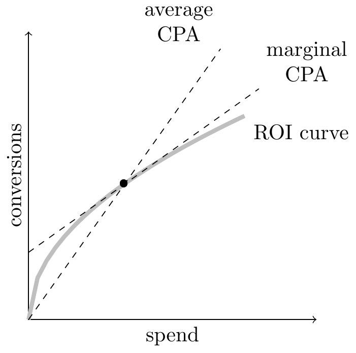
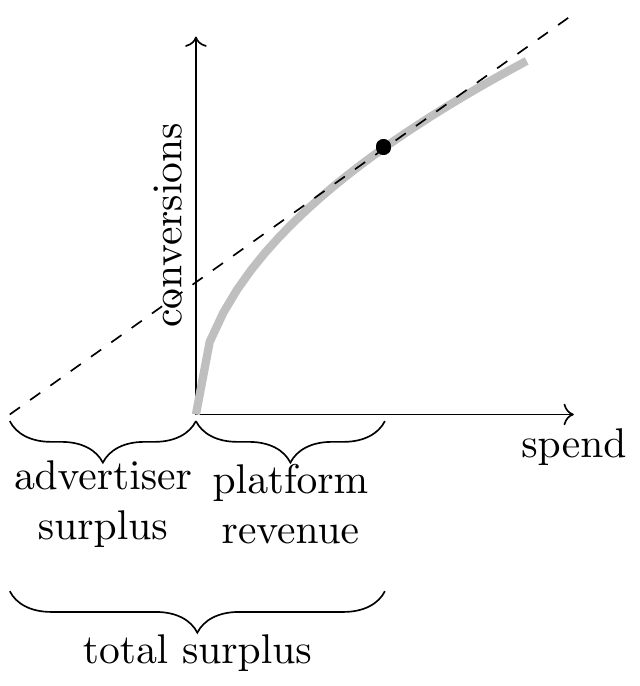

This is a very opinionated tour through the main economic and social facts about social media.
The core fact: mobile internet has made it possible for people to continuously send each other messages. The average person produces hundreds of messages a day (text messages, DMs, social media posts) and consumes thousands of messages. This seems to have had big effects on social behaviour, mental health, and politics. However radical changes to communication are not unprecedented, we should be able to learn something from the changes accompanying the invention of the alphabet, the printing press, newspaper, telegram, telephone, radio, television, cellphone, & email.
Instead of building up a body of evidence I will do the opposite. I will begin with a block of conjecture and whittle it down. I feel the academic approach to studying social media is often far too conservative, refusing to give any opinion about the majority of the consequential issues. At the end of the note I will go into more detail about my complaints.
A diagnosis.
Politics: a narrow ridge. I will start with a stupidly simple model of politics: democracies walk on a narrow ridge between authoritarianism and anarchy. Social media, by increasing the variety of political speech, shifts us farther from authoritarianism but closer to anarchy. Thus the political effect of social media depends on which side of the ridge that a state is more in danger of falling into.
We can crudely split political philosophers into those who have have worried about not enough speech because they perceive a danger from authoritarianism (Madison, Mill, Popper, Chomsky), and those who have worried about too much speech because they perceive a danger from anarchy (Plato, Lippman, Strauss, Huntington).
Thus we can summarize social media’s effect by (1) how far it shifts us from authoritarian toward the anarchic pole, and (2) which danger is greater in a given society.
To make precise the danger from anarchy there are a few historical periods where the public discourse was disordered and which arguably led to unecessary conflict and chaos: (1) in 1848 across Europe; (2) in Weimar Germany; (3) in 1968 across Western countries; (4) in various Latin American countries during post-war populist surges. I think the concern about social media disrupting political equilibrium should focus on this type of historical precedent.
Social Interactions.
Entertainment. Social media means that people have cheap entertainment on tap. Historically people have struggled with managing their own consumption, e.g. alcohol, opium, food, tobacco, television.
A plan for making things better. I think there are a number of feasible ways we could make social media better, feasible in the sense that there are clear historical precedents of using concerted argument and effort to bring about substantial changes. My plan is to change the behaviour of five groups:
- Employees at platforms. Encourage a sense of professional responsibility and a sharing of knowledge on how to manage a healthy community and how to assess the quality of content.
- Owners of platforms. Encourage owners to use their social conscience to bias their platforms towards healthy content, away from unhealthy content.
- Activist groups. Help activist groups exert pressure on platforms to bias towards healthy content. Practically this often has been effective by pressuring advertisers, who in turn pressure platforms.
- The community. Change norms in social media use, e.g. (1) not to harass people, (2) not to make hyperbolic or exaggerated claims, (3) to restrict the social media use of children.
- Government and regulators. Force platforms to publicly report detailed samples of the content that they are showing.
Summary Table
This table summarizes some basic empirical facts about social media. I put an asterisk ( * ) next to entries where I feel there is significant uncertainty, and no good reference which discusses the balance of evidence. However the discussion below reflects my personal views on each issue, and I sometimes is not very heavily cited.
| empirical facts | causal effects | |
| platform usage |
|
|
| business/profit |
|
|
| content |
|
|
| politics |
|
|
| welfare |
|
|
Platform Usage [UNFINISHED]
Data. High-quality descriptive ata about social network usage is relatively sparse. Useful data is spread across commercial suppliers (e.g. AppAnnie), nonprofits (Our World in Data), public decks by investors (e.g. “state of mobile”), and some academic papers.1
1 Best: Our World in Data report on the Rise of Social Media but it only has data since 2018. See esp. global MAU by platform 2004-2018.
Pew Research have data on platform usage in the US since 2012, but it’s a bit of work to put together (each wave is a separate CSV file). Microdata allows us to do demographics and intersection in usage. Pew visualization
Others: Business of Apps; Statista; Simon Kemp / DataReportal; Digital 2022: Global Overview Report; American Time Use Survey (ATUS); AppAnnie.
Overall usage of social media. Roughly 90% of the world uses some social media app, most people use many. For direct messaging (e.g. WhatsApp, iMessage) most countries have a single dominant platform, i.e. multi-homing is limited. However for broadcast sharing most countries have many apps which are differentiated by the graph: whether clustered by friends, family, neighborhood, industry, or shared interest.
Reach-engagement relationship. For social apps time-spent is roughly linear in reach (surprisingly consistent with Metcalfe’s law), while for non-social apps it’s closer to flat.
Dynamics/lifecycle. Social network markets tend to be dominated by the first mover and are rarely replaced. Since around 2010 it has been rare for an established social network (greater than 50% reach within some demographic) to show a significant decline in usage, seeming to imply that sunk network costs are high (non-social apps don’t show the same persistence). However over that period there have been many new social networks (e.g. Instagram, Snapchat, TikTok), typically adopted by new cohorts of phone users, or adopted alongside existing apps by existing cohorts.
Usage overlap. I don’t think there is very good data on overlap (AKA multi-homing).
Simple model of usage. Let \(p\) be the share of the population who are active on a platform (“reach”), and each person has a threshold \(p_i\) at which point they will join the platform, then we get an equilibrium where \(p=F(p)\). This gives you a model with tipping points and a marginal network multiplier. You can also assume time-spent is proportional to each user’s surplus in this model. To add to this model: (1) speed of adjustment, (2) degree of substitutability between other networks, (3) nature of clustering: friends/family/geographically/interest-based.
Network effects. We know that usage of apps is all network effects, i.e. you only use Instagram because other people use it. Thus the relevant estimand is the marginal network effect: what’s the effect of one extra person, or one extra minute. The ratio between the marginal and average can be described as the network elasticity. Marginal network effects are hard to estimate on most social networks because they are composed of many weak edges, this means that even enormous experiments will have very little power (power is linear in effect-size but sub-linear in sample-size). Thus even companies with 2 billion users are quite uncertain about the strength of marginal network effects. I think a reasonable starting point is an elasticity of 1/2: i.e. for the average user a 1% increase in usage by all their peers would cause an 0.5% increase in their own usage.
Substitution. We want to know the causal effect of an increase in quality of app A on time-spent on all activities (including app A). This is sometimes called cannibalization rate or diversion ratio. This can be difficult to estimate, and there are a few different estimands: (1) the marginal vs inframarginal effect; (2) the individual vs aggregate effect; (3) the app-specific vs category-specific effect.2
2 On the last point: the long-run effect of blocking a specific social-media app will be very different from blocking all social-media apps.
I don’t think there is much well-identified public evidence on this. Pure correlations in across users or across time typically finds positive correlations in activity, probably because they are driven by variation in unobserved factors which drive activity on all platforms. Cross-country correlations are more credible (estimand: marginal aggregate) and do show significant substituability in some types of app (note that it’s important that we observe usage across all apps, not just a subset).3 We can get identification from natural expirements when a platform unexpectedly has an outage (estimand: inframarginal aggregate) but it’s doubtful whether these reflect long-run substitution patterns. Permanent blocks on apps, such as India’s blocking of TikTok, are more useful.
3 There’s some nice maths involved in relationships between time-spent shares using Aitcheson geometry.
Evidence will be from experiments where users are paid to stop using a certain app will identify inframarginal individual app-specific substitution effects. Self-reported time-spent is notoriously noisy, we generally need on-device data. The one good paper I know of is Aridor (2022): he paid US university students with Android phones to install software that blocked either Instagram or YouTube for 1 or 2 weeks. I believe the paper finds surprisingly small between-app substitution rates: in both cases approximately 95% of the reduction in time on each app went to off-phone activities (Table 9).
Business Models
Some observations:4
4 Some references for this table: - Good reference on 2023 social media pricing - Pornhub mainly ad-supported - Telegram - Story from 2020 about ad-free tiers in newspapers
Online media is overwhelmingly ad-funded. This seems to be because: 1) ppl have a general disinclination to pay for services; 2) ad revenue can vary by user (AKA price discrimination); 3) the annoyance of ads is often smaller than the revenue; 4) network effects favor maximizing total users.
Not many platforms allow users to pay to remove the ads. In part because of adverse selection: the users who would pay are the users who are most valuable to advertisers.
Ad-free services are more common in music and video. This may be because because (1) the disutility of ads is higher relative to the revenue (i.e. interruptions during music and video are relatively more irritating), (2) network effects are less important when it’s passive consumption.
Some ad-supported networks have announced paid features. I’m skeptical they’ll raise much money, and it doesn’t make sense to charge for features that increase production, you should give them away: more production will cause more consumption, and so more ad revenue (Tirole).
This discussion leaves out the relationship with creators. E.g. buying content outright (Netflix) or revenue sharing (Spotify, YouTube, TikTok).
Many paid services started out ad-free but gradually inserted ads. Cable & Satellite radio, Netflix, HBO Max, Amazon. I cannot think of an example that went in the opposite direction. Intuitively these industries might want to first prioritize adoption, and so offer a low price and high quality, but once they have a secure footprint then they can afford to increase ad-load.
The thing looming on the horizon for all platforms is synthetic content. It seems likely that very soon platforms will be synthesizing videos which maximize propensity to watch, and ads which maximize propensity to click, and this could replace much hand-made content.
- Business model and content quality How big are Spence distortions: (1) ad-funded means optimizing for marginal minute insetad of inframarginal minute (AKA maximizing quantity of time-spent instead of quality of time-spent); (2) network effects means optimizing for marginal user instead of inframarginal user.
Bigger Picture
Offline media:
| minimally ad-supported | partially ad-supported | mostly ad-supported |
|---|---|---|
| books | newspapers | radio |
| comics | magazines | television |
| cinema | cable TV | |
| album music |
Online media:
| minimally ad-supported | partially ad-supported | mostly ad-supported |
|---|---|---|
| computer games | music streaming | social media |
| news websites | user-generated video | |
| video streaming | podcasts | |
| mobile apps |
General observations:
More ads when it’s difficult to physically charge customers (non-excludable). Anyone can tune into broadcast radio and TV so you cannot charge for shows, the only viable business model is with ads (or donations or public funding).
Fewer ads if the media is immersive or long. There’s zero or minimal advertising in the cinema, computer games, and non-broadcast music (i.e. streaming and albums). Perhaps because these are immersive and long experiences, and so it’s relatively more disruptive to be interrupted by an ad. In contrast it’s not so disruptive (1) to see an ad while reading a story; (2) to see ads between chunks of small content, rather than inserted into one big chunk of content.
Fewer ads if the marginal cost of producing the media is positive. If you have to pay to produce each unit that’s a reason to charge a positive price and not be solely ad-financed. As you increase price you get fewer eyeballs to sell but they’re more valuable eyeballs so the advertising loss is small. I’m not sure this explains the absence of ads in comics and in books.
Theory says ads are more likely for low-quality and common-quality media. E.g. Anderson & Jullien (2016, Handbook Media Econ) “The Advertising-Financed Business Model in Two-Sided Media Markets.” They note that you’d expect ad-financed media to feature duplication and lowest-common-denominator content, while subscription-financed media will get differentiation and niche content.
Online Advertising [UNFINISHED]
Model of advertising. We can call the relationship between expenditure and (incremental) conversions the ROI curve, and use that curve to estimate advertiser surplus.5
5 This is based on Varian (2009). Additional remarks: (1) advertisers tend to be budget-constrained in the short-run but will not be in the long-run; (2) if advertisers have zero marginal costs then their ROAS (return on ad spend) will reveal their elasticity, see this thread; (3) this model depends on the marginal value of a conversion being constant, it would break down if the advertiser’s lifetime value from a marginal conversion is meaningfully different from the lifetime value of the average conversion.

We can estimate the ROI curve by varying advertiser expenditure. A useful statistic to summarize the curvature of the ROI curve is the ratio of the marginal CPA to the average CPA (CPA=cost per acquisition=cost per conversion). This ratio will typically be greater than 1 because expenditure has diminishing returns. The ratio can also be interpreted as the elasticity of total expenditure with respect to total conversions, \(\varepsilon=\frac{d\text{expenditure}}{d\text{conversions}}\frac{\text{conversions}}{\text{expenditure}}\).
We can use the elasticity to estimate advertiser surplus. If we assume that (1) advertisers choose expenditure such that marginal cost=marginal value, and (2) the marginal value of a conversion is constant, then the elasticity represents the ratio between advertiser value and advertiser expenditure. E.g. suppose the marginal cost of a conversion is 3X the average cost of a conversion (\(\varepsilon=3\)), then if the marginal cost of a conversion represents the value of a conversion to an advertiser, the total value of conversions must be 3X spending on advertising. More formally:
\[\frac{\text{avg value per conversion}}{\text{avg cost per conversion}}=\frac{\text{marginal CPA}}{\text{average CPA}} =\varepsilon. \]

Google estimates surplus to be 2-2.3 times revenue. Varian (2009) originally proposed this method of estimating advertiser surplus (using a more confusing terminology) and estimates an elasticity of 3-3.3, and so concludes “the total value enjoyed by advertisers is between 2 and 2.3 times their total expenditure.” This seems a reasonable benchmark to use for estimating the surplus delivered by platforms to advertisers. However not all of the advertiser surplus should be thought of as socially productive, e.g. some will come from market-stealing.6
6 Google’s economic impact reports use the elasticiy from this 2009 paper but their estimate of total surplus is higher due to assuming that firms get 5X as many organic conversions from Google as they get paid conversions.
Incrementality of online advertising. An advantage of online over offline advertising is that you can observe whether people who saw your advertisement later purchased your product, and use this data to estimate the causal effect of the advertisment on sales. However these estimates are typically too high because those who are exposed to an advertisement likely would have purchased the product anyway.
Value of offsite tracking. A number of experiments have compared offsite data to target advertisments increases conversion rates by factor of around 2, e.g. Wernerfelt et al. (2022).
User response to ad-load. We are interested in the elasticity of total ad-conversions with respect to consumer ad-load. If elasticity is -1 then ad-load would be profit maximizing (we are at the top of the Laffer curve: a 1% increase in ad-load causes a 1% decrease in time-spent, and so no change in total ads shown.
- Hohnhold, O’Brien, and Tang (2015) found that Google’s mobile ad-load was to the right of the peak of the Laffer curve: by decreasing ad-load they could increase revenue. The effect was mainly through click-through rates, not overall ad-impressions. The half-life of adjustment was around 2 months.
- Huang, Reiley, and Riabov (2018) found a long-run elasticity of ad-load on consumption to be about 1/10. The effects were primarily on the extensive margin (days/user instead of minutes/day), and had a half-life of around 6 months.
- Yan et al. (2019) I have not properly read, but they seem to find significant dynamic effects: “based on the first three months’ data, we observe that the long term impact is at a much smaller scale than the short term impact in our application.”
Content [UNFINISHED]
Prevalence of content. It seems broadly true that .
content | - prevalence of content (by type/time/platform) | - tradeoff of engagement & prevalence |
| - correlation of prevalence w moderation type | - advertiser sensitivity to prevalence |
| - legal restrictions on content (by country/year) | - effect of moderation on production |
| - platform restrictions (by platform/year) | |
Where is the bad stuff? For various “bad” qualities (spam, misinfo, partisan, toxic, nudity, illegal, violent) how does the prevalence vary with the following: (1) centralized (TV, newspaper, news website) vs decentralized (email, message, social platform); (2) engagement-based ranked vs chronological; (3) follow-based distribution vs propagated distribution (resharing/retweeting) vs recommended distribution (neither follower nor propagated).
Who is creating content? Probably 50% of all content consumed is user-generated without a clear profit motive. Implies a delicate balance of norms which makes this huge system work. Platforms have tried many creator profit-sharing models, haven’t seen much survey of how this works.
How does the moderation system affect equilibrium content? There is big variation in moderation systems (ranking, mods, voting, shadowbans, karma) and big variation in outcomes (abuse, toxicity, informational value). It would be incredibly useful to compile observational data and give some stylized facts.
Q: why is there so much bad content on decentralized media? How much of the excess due to (A) people want to see bad content, and traditional media doesn’t show it to them; (B) bad actors exploit platforms to show users bad content they don’t want to see; (C) algorithms have an accidental bias towards bad content; (D) it’s just demographic differences.
Q: why do platforms moderate? The vast majority of moderation is not legally required, why do they do it? Some mixture of pressure from users, owners, advertisers, regulators, employees. The answer to this seems important. There’s a lot of observational variation that could be used to help answer this (though I doubt there are any clean natural experiments you could use as an IV).
Politics [UNFINISHED]
Unclear association with polarization. Polarization grew continuously in the US between 1978 and 2020 (by 1.1 SD), but other countries had mixed trends, and there is no clear association with internet access.7 In the US over 2005-2016 polarization grew the most among people who did not have internet access.8
Unclear association with populism. There seems to be a general consensus that support for populist movements has been increasing over the last 15 years or so, where “populism” means a broadly anti-elite ideology. In addition populist movements seem to be over-represented on social media relative to traditional media.9.
9 Dittrich (2017)
Causal Effect of Exposure
Guess et al. (2021), Levy (2021), and Casas, Menchen-Trevino and Wojcieszak (2022), Brookman and Kalla (2023): “Guess et al. (2021) finds effects on knowledge of the information in these sources, Levy (2021) finds that participants’ attitudes moderate broadly, and Casas, Menchen-Trevino and Wojcieszak (2022) generally find null effects on attitudinal and affective polarization (i.e., do not find backlash).”
Causal Effect of Censorship
David Yang (2023?) “Brave New World” tests censorship in China.
Welfare [UNFINISHED]
- WTP and consumer surplus from social networks (Gentzkow, Brynjolfsson, etc.)
- Causal effect of removal (Gentzkow, others?)
Causal effect of deprivation. Many studies asking users their WTA to be deprived of an app for a month get broadly consistent answers. Few good deprivation studies, results tend to be weak and hard to interpret because of dynamics and network effects. Addictive effects seem real but small (comparable to television or radio?). Observational effects on mental health, esp teens (I haven’t been following this literature).
- (look at Carl Shapiro notes)
- Q: How deep is the moat from network effects? How much better does a competitor need to be to steal the customers from incumbent? Appears to be large. Will get coexistence when there is differentiation in graphs.
Plan for Change
Here is a sketch for how things could be better.
(1) Platform workers: become more opinionated about quality of content. I believe many platforms under-appreciate the returns to investment in content quality.
(2) Platform owners: internalize a social responsibility. Platforms quietly suppress unhealthy: conspiracies, hyperpartisan, illegal, and quietly raise up healthy content: constructive.
Historically: Ted Turner (CNN), Murdochs (Fox/NewsCorp), Sulzbergers (NYT), Bancroft (WSJ), Grahams (WaPo), Bezos (WaPo).
(3) Activist groups: pressure platforms over unhealthy content. Advertisers and activist groups make it unpleasant for platforms to show unhealthy content.
Historically: Mainstream media (radio, TV) has always avoided things that might offend a pressure group, e.g. NAACP, Anti Defamation League/AIPAC, SPUC.
(4) Society: Norms change for social media use. Social norms shift against conspiracy theories, partisan cheerleading, bullying, mindless use. Parents restrict their childrens’ use.
Historically: Huge variations with respect to diet, smoking, drinking, gambling, drugs, sex, gender, discrimination. The variation generally more than can be explained by prices or incentives in normal sense. It seems that people generally do what they see their peers do.
(5) Government: Regulated transparency of what’s shown.
Platforms required to share random samples and the most-popular shared content.
Historically: literature on transparency has sparse causal effects; perhaps transparency on fracking reduced externalities.
Complaints on Economic Research [UNFINISHED]
Shallow problems.
- Regression tables instead of visualization.s
Deep problems.
Very Deep problems.
Deepest problems.
- Daniel Dennett wrote a nice paper about how most academic philosophers inadvertantly end up working on meaningless issues, “chmess” problems.
Lack of stylized facts. Extraordinary how many papers spend 100 pages on estimating a specific causal effect, and 1/2 page establishing the basic magnitudes, trends, and correlations in the area under study.
Most of the papers today are on second-order topics. We are discussing papers about topics where we either (1) have good identification or (2) an elegant piece of counter-intuitive theory. But of course these two criteria are almost uncorrelated with what’s important. We all acknowledge this.
I think everyone in the room understands this, that we’re tacitly operating not entirely in good faith, so we’re not misled. However this can confuse outsiders, e.g. regulators and PhD students.
Appendix: Internet Business Models
| social network / dating | |
|
messaging | |
|---|---|---|---|---|
| SINGLE TIER | ||||
| ads + free |
|
|
|
|
| no ads + pay |
|
|
||
| ads + pay |
|
|
||
| TWO TIERS | ||||
|
|
|
|
|
|
|
|||
|
|
|||
|
|
|
||
|
|
|||
|
|
|
||
|
|
|
||
| OTHERS | ||||
| Commission on transactions | ||||
| Donations |
|
|
|
|
| Free with another product |
|
|||
| Publicly Funded, no ads |
|
|
||
| No significant direct revenue |
|
|